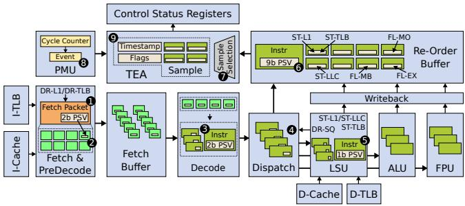

TEA: Time-Proportional Event Analysis 论文解析¶
0. 论文基本信息¶
作者 (Authors)
- Björn Gottschall
- Lieven Eeckhout
- Magnus Jahre
发表期刊/会议 (Journal/Conference)
- Proceedings of the 50th Annual International Symposium on Computer Architecture (ISCA ’23)
发表年份 (Publication Year)
- 2023
1. 摘要¶
目的
- 解决当前性能分析工具无法有效解释“为何执行应用程序的性能关键指令会耗费时间”这一根本问题。
- 提出一种能同时回答“哪些指令是性能关键的”（Q1）和“为何这些指令是性能关键的”（Q2）的统一分析方法。
方法
- 提出 Time-Proportional Event Analysis (TEA)，其核心是创建 时间比例化的每指令周期栈 (Per-Instruction Cycle Stacks, PICS)。
- PICS 通过在指令提交阶段进行统计采样，确保每个静态指令对总执行时间的贡献与其实际耗时成正比。
- 为追踪导致性能损失的微架构事件，TEA 为每个动态指令分配一个 性能签名向量 (Performance Signature Vector, PSV)，用以记录该指令在其生命周期内所遭遇的性能事件。
- 为平衡洞察力与开销，TEA 精心选择了 9个关键性能事件，覆盖了提交阶段的三种非计算状态：Stalled（执行停顿）、Drained（前端停顿）和 Flushed（流水线冲刷）。
- TEA 在 Berkeley Out-of-Order Machine (BOOM) 核心中实现了RTL级硬件支持，并利用Linux perf进行样本收集和后处理以生成PICS。

Figure 3: Performance event hierarchy for the Stalled (ST) commit state.

Figure 4: TEA microarchitecture.
结果
- 准确性: 与一个不可实现的“黄金参考”（捕获所有动态指令的所有周期）相比，TEA的平均误差仅为 2.1%。相比之下，AMD IBS、Arm SPE和IBM RIS的平均误差分别高达 55.6%、55.5% 和 56.0%。
- 开销:
- 性能开销: 平均仅为 1.1%。
- 功耗开销: 每核仅增加约 3.2 mW（约 0.1%）。
- 存储开销: 每核 249字节。
- 实用性:
- 成功识别并优化了SPEC CPU2017基准测试中的两个案例：
- lbm: 通过TEA指导的软件预取优化，获得 1.28倍 加速。
- nab: 通过TEA发现浮点平方根指令因流水线冲刷而延迟执行，使用
–fast-math编译选项后获得 2.45倍 加速。
- 成功识别并优化了SPEC CPU2017基准测试中的两个案例：
- 对比分析:
- 指令驱动方法（如IBS）因在fetch/dispatch阶段标记指令，导致性能剖析非时间比例化，严重失真。
- 事件驱动方法（如PMC计数）因无法区分隐藏与非隐藏的延迟，其事件计数与实际性能影响的相关性很差。

Figure 5: Quantifying the error for the PICS obtained through IBS, SPE, RIS, NCI-TEA, and TEA. TEA achieves the highest accuracy within 2.1% (and at most 7.7%) compared to the golden reference.

Figure 6: PICS for the top-3 instructions as provided by IBS, TEA, and the golden reference (GR). The PICS provided by TEA are accurate compared to the golden reference, in contrast to IBS.

Figure 7: Quantifying the correlation between event count and its impact on performance. Some event counts correlate strongly with their impact on performance while others do not.
结论
- TEA通过创建时间比例化的PICS，成功地将性能剖析与性能事件分析统一起来，能够精准地解释性能瓶颈的根本原因。
- 其精心设计的硬件支持在引入极低开销的同时，提供了远超现有技术（如IBS, SPE, RIS）的分析精度。
- TEA的有效性已在真实基准测试中得到验证，能够指导开发者发现并解决那些传统工具难以定位的复杂性能问题，从而获得显著的性能提升。
2. 背景知识与核心贡献¶
研究背景与动机
- 随着 Dennard scaling 和 Moore's law 的终结，CPU 架构转向异构化和专业化，使得优化串行 CPU 代码变得愈发关键（受 Amdahl’s Law 影响）。
- 现有性能分析工具难以有效指导优化，因为它们无法同时回答两个核心问题：
- Q1: 应用程序在哪些指令上花费了最多时间？（即，哪些是指令是 performance-critical？）
- Q2: 为什么这些指令是性能关键的？是由哪些 microarchitectural events（如缓存未命中、分支误预测）导致的？
- 当前的性能分析方法存在根本性缺陷：
- Instruction-driven approaches (如 AMD IBS, Arm SPE, IBM RIS) 在 fetch 或 dispatch 阶段标记指令，导致其分析结果非时间比例（non-time-proportional），偏向于在前端停留时间长的指令，而非真正暴露延迟的指令。
- Event-driven approaches 仅统计事件计数，但这些计数与事件对性能的实际影响（即造成的延迟）相关性很差，因为现代处理器的 latency hiding 机制会掩盖许多事件的影响。
Figure 7: Quantifying the correlation between event count and its impact on performance. Some event counts correlate strongly with their impact on performance while others do not.
核心贡献
- 提出 Time-Proportional Event Analysis (TEA)，通过构建 时间比例的每指令周期栈 (Per-Instruction Cycle Stacks, PICS) 来统一回答 Q1 和 Q2。PICS 的特性是：
- 栈的高度与该静态指令对总执行时间的贡献成正比（回答 Q1）。
- 栈内各组成部分的大小与（组合）性能事件对整体性能的影响成正比（回答 Q2）。
- 设计并实现了 TEA 的硬件支持机制，包括为每个动态指令分配一个 Performance Signature Vector (PSV) 来追踪其经历的关键事件，并采用与 TIP 相同的时间比例采样策略。
- 通过精心选择 9 个关键性能事件（基于事件层级结构），在保持极低开销的同时捕获了主要性能瓶颈。评估显示，99% 未被 TEA 事件标记的指令所造成的停顿少于 5.8 个时钟周期。
- 在 BOOM 核心上的 RTL 实现证明了 TEA 的高效性：
- 存储开销：仅 249 字节/核。
- 功耗开销：约 3.2 mW (∼0.1%)。
- 性能开销：平均 1.1%。
- TEA 的准确性远超现有技术。相比一个理想的“黄金标准”，TEA 的平均误差仅为 2.1%，而 IBS、SPE 和 RIS 的平均误差分别高达 55.6%、55.5% 和 56.0%。
| 方法 | 平均误差 | 最大误差 |
|---|---|---|
| TEA | 2.1% | 7.7% |
| NCI-TEA | 11.3% | 22.0% |
| RIS | 56.0% | 79.7% |
| IBS | 55.6% | 79.7% |
| SPE | 55.5% | 79.7% |
Figure 5: Quantifying the error for the PICS obtained through IBS, SPE, RIS, NCI-TEA, and TEA. TEA achieves the highest accuracy within 2.1% (and at most 7.7%) compared to the golden reference.
- 通过 SPEC CPU2017 基准测试中的 lbm 和 nab 案例研究，验证了 TEA 的实用性。TEA 成功识别出传统工具难以发现的性能问题，并指导优化分别获得了 1.28× 和 2.45× 的加速比。
3. 核心技术和实现细节¶
0. 技术架构概览¶
整体技术架构
TEA (Time-Proportional Event Analysis) 的核心目标是构建 时间比例化（time-proportional）的 **Per-Instruction Cycle Stacks **(PICS)，以统一回答性能分析中的两个根本问题：哪些指令是性能关键的（Q1），以及为什么它们是性能关键的（Q2）。其架构围绕硬件支持、事件选择和软件后处理三个层面展开。
- 硬件支持层：
- 在处理器微架构中为每个动态执行的指令（或 µop）分配一个 **Performance Signature Vector **(PSV)。PSV 是一个位向量，每一位对应一个特定的性能事件。
- PSV 在指令流经流水线的不同阶段被逐步填充。例如，在 Fetch 阶段记录指令缓存和 TLB 未命中，在 Dispatch 阶段检测 Store Queue 满，在 LSU 和 Cache 响应时记录数据缓存和 TLB 未命中，在 ROB 中记录导致 Flush 的事件（如分支误预测、异常）。
- TEA 复用并扩展了 **TIP **(Time-Proportional Instruction Profiling) 的采样逻辑，该逻辑位于 **ROB **(Re-Order Buffer)。它根据处理器在采样周期所处的 提交状态（Compute, Drained, Stalled, Flushed）来决定采样哪个（些）指令。
- 采样到的指令地址和其完整的 PSV 被写入 **Control and Status Registers **(CSRs)，并通过中断传递给软件。
Figure 4: TEA microarchitecture.
- 性能事件选择层：
- 为了平衡洞察力与开销，TEA 精心选择了 9个关键性能事件，这些事件直接映射到三种非计算的提交状态（Drained, Stalled, Flushed）。
- 事件选择基于 性能事件层级结构（hierarchies），优先捕获能解释长延迟的根本原因事件（如 L1 Miss），而非所有可能的衍生事件。
- 这9个事件足以解释 99% 的、未被任何事件标记的指令所产生的短于 5.8 个时钟周期的停顿，证明了其有效性。

Table 1: The performance events of TEA, IBS, SPE, and RIS.
- 软件后处理层：
- 采样中断处理程序将 CSR 中的数据（指令地址、PSV、时间戳等）连同进程/线程信息一起写入内存缓冲区。
- 应用程序结束后，一个专用工具读取所有采样数据，并根据静态指令地址对样本进行聚合。
- 对于每个静态指令，工具将其所有动态执行样本的周期数，按照 PSV 的值（即遭遇的 事件组合）进行分类累加，最终生成该指令的 PICS。PICS 的高度代表该指令对总执行时间的贡献（回答 Q1），各分块的大小代表不同（组合）事件对该指令执行时间的影响（回答 Q2）。

Figure 1: Example explaining how TEA creates PICS. TEA explains how performance events cause performance loss.
关键优势与开销
TEA 架构的关键优势在于其 时间比例性，这使其显著优于在 Fetch 或 Dispatch 阶段进行指令标记的现有方案（如 AMD IBS, Arm SPE）。

Figure 2: Example comparing TEA to dispatch-tagging. TEA is time-proportional whereas dispatch-tagging is not.
其开销被控制在极低水平：
- 存储开销：每个核心仅需 249 字节。
- 功耗开销：每个核心增加约 3.2 mW（约 0.1%）。
- 性能开销：依赖统计采样（4 KHz），平均仅为 1.1%。
- 准确性：相比无法实现的“黄金标准”，平均误差仅为 2.1%，远优于 IBS/SPE/RIS 的 ~55.5% 平均误差。
| 方法 | 平均误差 | 性能开销 | 核心思想 |
|---|---|---|---|
| TEA | 2.1% | 1.1% | 时间比例化采样 + 全飞行指令事件追踪 |
| NCI-TEA | 11.3% | 1.1% | 提交时采样，但Flush状态处理不准确 |
| AMD IBS / Arm SPE / IBM RIS | ~55.5% | 低 | 非时间比例化（Fetch/Dispatch标记） |
1. Time-Proportional Per-Instruction Cycle Stacks (PICS)¶
核心概念与目标
- Time-Proportional Per-Instruction Cycle Stacks (PICS) 的核心目标是统一性能剖析（profiling）与性能事件分析（event analysis），以回答两个根本问题：(Q1) 哪些指令是性能关键的？(Q2) 为什么这些指令是性能关键的？
- PICS 通过为每个static instruction（静态指令）构建一个“周期栈”来实现这一目标。该栈的总高度代表该指令对整体执行时间的贡献比例，而栈内的各个分量则代表了该指令在动态执行过程中所遭遇的（组合）performance events（性能事件）对其执行时间的具体影响。
- 这种设计确保了分析结果的time-proportionality（时间比例性），即分析结果直接反映了指令在commit stage（提交阶段）暴露的延迟，而非在fetch或dispatch阶段的活动。
实现原理与算法流程
- PICS 的创建依赖于论文提出的 Time-Proportional Event Analysis (TEA) 硬件机制。
- 其核心数据结构是 Performance Signature Vector (PSV)，这是一个为每个dynamically executed instruction（动态执行指令）分配的位向量，其中每一位对应一个特定的性能事件。如果该指令在其生命周期内遭遇了某个事件，对应的位就会被置为1。
- 算法流程基于statistical sampling（统计采样），具体步骤如下：
- 采样触发: 性能监控单元（PMU）以固定频率（如4 KHz）触发采样中断。
- 指令选择: TEA 的采样逻辑继承自 TIP [22]，根据处理器在采样时刻的commit state（提交状态）来决定采样哪个（些）指令：
- Compute: 处理器正在提交指令，时间平均分配给所有提交的指令。
- Drained: ROB（重排序缓冲区）因前端停顿而变空，时间归因于下一个将要提交的指令。
- Stalled: ROB头部的指令因未执行完而停顿，时间归因于该停顿指令。
- Flushed: 因分支误预测等原因导致ROB被冲刷，时间归因于最后一个已提交的、引发冲刷的指令。
- 数据捕获: 选中的指令的instruction pointer(s)（指令指针）和其当前的 PSV(s) 被读取并打包成一个样本。
- 软件处理: 中断服务程序将样本（包括时间戳、指令地址、PSV等）写入内存缓冲区。
- PICS 生成: 应用程序结束后，一个后处理工具读取所有样本文件。它将样本按static instruction（通过指令地址映射）进行聚合，并根据PSV的值（即事件签名）对周期进行分类累加，最终为每个静态指令生成一个完整的PICS。
Figure 1: Example explaining how TEA creates PICS. TEA explains how performance events cause performance loss.
关键参数与事件选择
- 为了平衡insight（洞察力）与overhead（开销），TEA 并非追踪所有可能的性能事件，而是精心选择了9个关键事件。这些事件的选择基于对commit states（提交状态）与底层微架构行为之间因果关系的深入理解。
- 这9个事件被组织成一个层次结构，并明确关联到三种非计算的提交状态（Stalled, Drained, Flushed）：
| Commit State | Performance Event (Code) | Description |
|---|---|---|
| Stalled (ST) | ST-L1 | L1 数据缓存未命中 |
| ST-TLB | L1 数据 TLB 未命中 | |
| ST-LLC | LLC (末级缓存) 未命中 | |
| Drained (DR) | DR-L1 | L1 指令缓存未命中 |
| DR-TLB | L1 指令 TLB 未命中 | |
| DR-SQ | 存储队列（Store Queue）满导致ROB排空 | |
| Flushed (FL) | FL-MB | 分支误预测（Mispredicted Branch） |
| FL-EX | 异常（Exception） | |
| FL-MO | 内存排序冲突（Memory Ordering Violation） |
- 论文指出，仅用这9个事件，就能确保99%的、未被任何事件标记的指令所产生的停顿周期少于5.8个时钟周期，证明了该事件集的有效性。
Figure 3: Performance event hierarchy for the Stalled (ST) commit state.
输入输出关系及整体作用
- 输入:
- 硬件层面: 处理器在运行时产生的原始信号，包括指令流、缓存/TLB的命中/未命中信号、分支预测结果、异常信号、ROB状态（头/尾指针、提交状态）等。
- 软件层面: 采样频率配置（如4 KHz）。
- 输出:
- 直接输出: 一系列包含时间戳、指令地址和PSV的采样记录。
- 最终产物: Per-Instruction Cycle Stacks (PICS)，这是一个结构化的性能分析报告，可以按指令、基本块或函数等不同粒度进行可视化。
- 在整体中的作用:
- PICS 是连接底层硬件行为与上层软件性能的关键桥梁。它将抽象的“执行时间”分解为具体的、可操作的微架构事件。
- 相比于传统的instruction-driven（指令驱动，如IBS/SPE/RIS，在前端打标签）和event-driven（事件驱动，仅计数）方法，PICS 提供了因果性更强的分析视图。例如，它能清晰区分一个缓存未命中是隐藏的（不影响提交）还是非隐藏的（直接导致停顿），这是传统事件计数无法做到的。
- 如图2所示，传统方法在停顿时会错误地对前端新进入的指令（如I5或I8）进行采样，而TEA/PICS则能正确地将时间归因于在ROB头部造成停顿的指令（I1）。
Figure 2: Example comparing TEA to dispatch-tagging. TEA is time-proportional whereas dispatch-tagging is not.
准确性与开销
- 准确性: 与一个理想的、无采样的“黄金参考”相比，TEA生成的PICS平均误差仅为2.1%。这远优于AMD IBS (55.6%)、Arm SPE (55.5%) 和 IBM RIS (56.0%)。
- 开销:
- 性能开销: 由于采用统计采样，平均性能开销仅为 1.1%。
- 功耗开销: 每核增加约 3.2 mW（约 0.1%）。
- 存储开销: 每核增加 249 bytes 的硬件存储（主要用于在ROB等结构中存放PSV）。
Figure 5: Quantifying the error for the PICS obtained through IBS, SPE, RIS, NCI-TEA, and TEA. TEA achieves the highest accuracy within 2.1% (and at most 7.7%) compared to the golden reference.
2. Performance Signature Vector (PSV)¶
Performance Signature Vector (PSV) 的核心定义与作用
- Performance Signature Vector (PSV) 是 TEA 为每个动态执行的指令（或 µop）分配的一个位向量 (bit-vector)。
- 其核心作用是精确追踪该指令在其整个生命周期内所遭遇的微架构性能事件 (microarchitectural performance events)。
- PSV 是构建 Per-Instruction Cycle Stacks (PICS) 的基础数据单元。通过聚合所有采样到的、属于同一静态指令的 PSV，TEA 能够将该指令对总执行时间的贡献，按其遭遇的不同（或组合）性能事件进行分解，从而同时回答“哪个指令是性能关键的”和“为什么它是性能关键的”这两个问题。
PSV 的实现原理与硬件集成
- PSV 的每一位对应一个预定义的、由 TEA 硬件支持的性能事件。在论文的 BOOM 核心实现中，这个向量长度为 9 位。
- PSV 的生命周期始于指令进入流水线，并随着指令在流水线中流动而被更新：
- 前端 (Front-end): 在 Fetch 阶段，会检测并设置与取指相关的事件位，如 DR-L1 (L1 指令缓存未命中) 和 DR-TLB (L1 指令 TLB 未命中)。这些位被初始化并附加到取指包上。
- 译码与分发 (Decode & Dispatch): 指令被解码为 µop 后，PSV 被传递下去。在 Dispatch 阶段，会检测并设置 DR-SQ (存储队列满导致 ROB 排空) 事件位。
- 执行阶段 (Execute): 在 Load/Store 单元 (LSU) 中，会检测数据相关的事件，如 ST-TLB (L1 数据 TLB 未命中)，并在 LSU 条目中暂存该信息。当缓存响应返回时，ST-L1 (L1 数据缓存未命中) 和 ST-LLC (LLC 未命中) 事件位会被设置。
- 提交阶段 (Commit): 与流水线冲刷相关的事件，如 FL-MB (分支预测错误)、FL-EX (异常) 和 FL-MO (内存排序冲突)，由 Re-Order Buffer (ROB) 直接检测并记录到对应指令的 PSV 中。
- 最终，完整的 9 位 PSV 被存储在该 µop 对应的 ROB 条目中，等待采样。
Figure 4: TEA microarchitecture.
PSV 的算法流程：从追踪到采样
- 追踪 (Tracking): 对于每一个在飞行中的 (in-flight) 指令，其 PSV 会随着它在流水线中经历的不同阶段而被动态更新。每当一个支持的性能事件发生，对应的位就被置为 1。
- 采样 (Sampling): TEA 复用 TIP 的时间比例采样逻辑。一个周期计数器以 4 KHz 的频率触发采样。
- 采样逻辑首先判断当前 CPU 的 提交状态 (commit state)：Compute, Drained, Stalled, 或 Flushed。
- 根据状态，选择正确的指令进行采样（例如，在 Stalled 状态下选择 ROB 头部的指令，在 Flushed 状态下选择最后一个提交的指令）。
- 选中的指令（或指令组）的 指令地址 (instruction pointer) 和完整的 PSV 会被打包成一个样本。
- 输出 (Output): 该样本被写入 Control and Status Registers (CSRs)，并触发一个中断。采样软件（如 Linux perf）在中断处理程序中读取 CSR，将样本（包含地址、PSV、时间戳等）存入内存缓冲区。
PSV 的参数设置与事件选择
- PSV 的大小（即支持的事件数量）是开销与洞察力之间权衡的结果。论文通过分析性能事件的层次结构 (hierarchies) 来指导选择。
- 最终选定的 9 个性能事件被精心设计，以覆盖所有非计算提交状态（Drained, Stalled, Flushed）的主要成因，并确保能解释绝大部分的性能损失。
- 下表总结了 TEA 的 9 个性能事件及其含义：
| 提交状态 | 性能事件 | 说明 |
|---|---|---|
| Drained (DR) | DR-L1 | L1 指令缓存未命中 |
| DR-TLB | L1 指令 TLB 未命中 | |
| DR-SQ | 存储队列 (Store Queue) 满 | |
| Flushed (FL) | FL-MB | 分支预测错误 (Mispredicted Branch) |
| FL-EX | 异常 (Exception) | |
| FL-MO | 内存排序冲突 (Memory Ordering Violation) | |
| Stalled (ST) | ST-L1 | L1 数据缓存未命中 |
| ST-TLB | L1 数据 TLB 未命中 | |
| ST-LLC | LLC (末级缓存) 未命中 |
Table 1: The performance events of TEA, IBS, SPE, and RIS.
- 这种选择策略非常有效：评估表明，对于那些未被分配任何事件但仍然造成提交停顿的指令，99% 的停顿时长都少于 5.8 个时钟周期，证明这 9 个事件足以捕获主要的性能瓶颈。
PSV 的输入输出关系及整体作用
- 输入: PSV 本身不直接接收外部输入，它的输入是流水线各阶段产生的性能事件信号。这些信号是处理器正常运行时产生的副产品。
- 输出: PSV 的直接输出是作为采样数据的一部分，提供给软件分析工具。其最终输出是构成 PICS 的核心数据。
- 在 TEA 整体架构中的作用:
- 统一桥梁: PSV 是连接性能剖析 (profiling) 和性能事件分析 (event analysis) 的关键数据结构。它将抽象的时间消耗与具体的硬件事件关联起来。
- 支持组合事件分析: 由于 PSV 是一个位向量，它可以自然地表示组合事件 (combined events)（即多个位同时为 1）。这对于诊断复杂的性能问题（如同时发生缓存和 TLB 未命中）至关重要。论文指出，30.0% 的遭遇至少一个事件的动态指令都经历了组合事件。
- 实现时间比例性: 通过只在时间比例采样点捕获 PSV，并将其与正确归因的指令地址绑定，TEA 确保了最终 PICS 的时间比例性，这是其相较于 AMD IBS、Arm SPE 等传统方法准确率大幅提升（平均误差 2.1% vs. ~55.5%）的根本原因。
3. Commit-State-Based Event Hierarchy¶
TEA 的核心创新在于其 Commit-State-Based Event Hierarchy（基于提交状态的事件层次结构）设计。该设计将复杂的微架构性能分析问题，系统性地分解为对处理器 commit stage（提交阶段）三种非计算状态的归因分析，并据此构建了一个精简而高效的性能事件追踪体系。
核心原理与算法流程
- TEA 的根本出发点是：一个指令对程序总执行时间的真实贡献，只有在其 latency is exposed（延迟被暴露）时才能被准确衡量，而这恰好发生在 commit stage。
- 在任意给定周期，处理器的 commit stage 必然处于以下四种状态之一：
- Compute: 正在提交指令，此时指令的执行延迟被完全隐藏。
- Stalled (ST): ROB（Re-Order Buffer）头部的指令尚未执行完毕，导致提交停滞。
- Drained (DR): ROB 已空，通常是由于前端（如取指）停顿导致无新指令进入流水线。
- Flushed (FL): 由于错误预测、异常等原因，ROB 被清空，所有未提交的年轻指令被丢弃。
- 关键洞察：只有 Stalled, Drained, 和 Flushed 这三种 non-compute states（非计算状态）会导致性能损失，因此性能分析的核心任务就是将这些状态精确地映射到其底层的 performance events（性能事件）上。
- 为了高效完成此映射，TEA 构建了 event hierarchies（事件层次结构）。这些层次结构揭示了事件间的依赖关系：
- Independent events（独立事件）：可以独立发生，例如 L1 数据缓存缺失和 L1 TLB 缺失。
- Dependent events（依赖事件）：必须在前置事件发生后才可能发生，例如 LLC（Last-Level Cache）缺失的前提是 L1 缓存已经缺失。
- 基于此层次结构，TEA 采用了一种自上而下的选择策略：优先捕获层次结构中较高层级的 root events（根事件），因为它们能解释最广泛的下游停顿原因。例如，捕获 L1 data cache miss 比只捕获 LLC miss 更具解释力，因为前者包含了后者的所有情况以及 L1 命中的情况。
Figure 3: Performance event hierarchy for the Stalled (ST) commit state.
九个关键性能事件的选择与作用
TEA 最终精心挑选了 nine performance events（九个性能事件），分别对应三种非计算状态，以在极低开销下提供最大洞察力。
| Commit State | Performance Event (TEA Label) | 事件描述 | 作用 |
|---|---|---|---|
| Drained (DR) | DR-L1 | L1 指令缓存缺失 | 解释因取指停顿导致的 ROB 排空。 |
| DR-TLB | L1 指令 TLB 缺失 | 解释因地址翻译停顿导致的取指瓶颈。 | |
| DR-SQ | 存储队列（Store Queue）满 | 解释因存储带宽瓶颈导致的提交停滞和前端停顿。 | |
| Flushed (FL) | FL-MB | 分支预测错误 | 解释因错误预测导致的流水线冲刷。 |
| FL-EX | 异常（Exception） | 解释因处理异常导致的流水线冲刷。 | |
| FL-MO | 内存排序冲突（Memory Ordering Violation） | 解释因内存一致性问题导致的冲刷。 | |
| Stalled (ST) | ST-L1 | L1 数据缓存缺失 | 解释因数据加载延迟导致的提交停滞。 |
| ST-TLB | L1 数据 TLB 缺失 | 解释因数据地址翻译延迟导致的提交停滞。 | |
| ST-LLC | LLC 数据缺失 | 为内存敏感型应用提供更深层次的缓存层次洞察。 |
Table 1: The performance events of TEA, IBS, SPE, and RIS.
输入输出关系及整体作用
- 输入: 处理器在运行时产生的原始微架构信号，例如缓存响应信号、TLB 查询结果、分支预测单元的 flush 信号、LSQ（Load/Store Queue）的满信号等。
- 处理过程:
- 为每个动态指令（或 µop）分配一个 Performance Signature Vector (PSV)，这是一个 9-bit 的位向量，每一位对应上述九个事件之一。
- 在指令流经流水线各阶段时，硬件逻辑会根据发生的事件实时更新其 PSV。例如，在取指阶段设置 DR-L1/DR-TLB 位，在访存阶段设置 ST-L1/ST-TLB/ST-LLC 位，在 ROB 中记录 FL-MB/FL-EX/FL-MO 位。
- Time-proportional sampling（时间比例采样）硬件会周期性地（如 4 KHz）检查 commit stage 的状态，并根据 TIP 的规则选择需要采样的指令（即当前暴露延迟的指令）。
- 采样时，不仅捕获指令地址，还捕获其完整的 PSV。
- 输出: 一个包含 (instruction address, PSV, timestamp, commit state) 的样本流。
- 在整体中的作用: 这些样本是构建 Per-Instruction Cycle Stacks (PICS) 的唯一原材料。通过在软件后处理阶段聚合所有具有相同静态指令地址和相同 PSV 签名的样本，TEA 能够精确地回答两个根本问题：
- Q1 (Which?): 每个静态指令对总执行时间的贡献（由其所有样本的总权重决定）。
- Q2 (Why?): 该贡献具体是由哪些（或哪些组合的）性能事件造成的（由 PSV 签名决定）。这种将时间消耗直接与因果事件挂钩的能力，是 TEA 相对于传统 instruction-driven（指令驱动）和 event-driven（事件驱动）方法的根本优势。
4. Time-Proportional Sampling Logic¶
Time-Proportional Sampling Logic 的实现原理与流程
TEA 的核心在于其 Time-Proportional Sampling Logic，该逻辑继承并扩展了 TIP [22] 的工作，确保性能分析样本能精确反映指令对总执行时间的真实贡献。其实现紧密围绕处理器 commit stage 的状态机，并通过硬件支持的统计采样来捕获关键信息。
- 核心思想: 在任何一个时钟周期，处理器花费的时间最终都会体现在 commit stage 的行为上。因此，采样逻辑必须识别出在该周期内，是哪个（或哪些）指令的延迟正在被“暴露”出来，并将该周期的时间开销归因于这些指令。
- 四种 Commit 状态及其归因策略:
- Compute: 处理器正在提交一条或多条指令。此时，执行延迟被完全隐藏。时间开销被平均分配给所有在该周期提交的指令。例如，一个 4-wide 的核心同时提交 4 条指令，则每条指令被分配 1/4 个周期的时间。
- Stalled: ROB (Re-Order Buffer) 的头部指令
I已准备好提交，但尚未完成执行（例如，等待缓存加载数据）。此时，整个处理器被I阻塞，因此该周期的全部时间开销都归因于指令I（即 next-committing instruction）。 - Drained: ROB 为空，原因是前端停顿（例如，取指缓存未命中）。此时，处理器在等待下一条指令进入流水线。时间开销归因于下一条将要提交的指令（同样是 next-committing instruction）。
- Flushed: 由于错误预测的分支或异常等原因，ROB 被清空。此时，造成 flush 的那条指令（例如，错误预测的分支）已经提交，但其后果（清空流水线）导致了后续的空闲周期。因此，这些空闲周期的时间开销应归因于最后提交的那条指令（即 last-committed instruction），而非下一条将要提交的指令。
Figure 1: Example explaining how TEA creates PICS. TEA explains how performance events cause performance loss.
- 硬件采样流程:
- 一个 cycle counter（通常配置为 4 KHz 的采样频率，在 3.2 GHz 主频下约为每 800,000 个周期采样一次）会定期触发一个 PMU (Performance Monitoring Unit) 事件。
- 当采样事件触发时，Sample Selection 单元（位于 ROB 头部）会立即检查当前的 commit 状态（Compute, Stalled, Drained, or Flushed）。
- 根据上述归因策略，硬件逻辑会选择正确的指令指针（IP）：
- 对于 Stalled 和 Drained 状态，它会选择 ROB 头部的指令（next-committing）。
- 对于 Flushed 状态，TEA 专门维护了一个寄存器来存储 last-committed instruction 的 PSV (Performance Signature Vector)，以确保能正确归因。
- 对于 Compute 状态，它会选择当前周期所有提交的指令。
- 选中的指令的 Instruction Pointer(s) 和对应的 PSV(s) 会被打包成一个样本。
- 该样本被写入 Control and Status Registers (CSRs)，并触发一个中断。
- 中断处理程序（通常是 Linux
perf工具的一部分）会读取 CSR 中的样本数据，并将其连同时间戳、核心 ID、进程/线程 ID 等元数据一起存储到内存缓冲区中。
输入输出关系及在 TEA 整体架构中的作用
- 输入:
- 处理器在每个时钟周期的 commit stage 状态。
- 每个动态指令在其生命周期内累积的 PSV，该向量记录了该指令所经历的所有关键性能事件（如缓存未命中、TLB 未命中、分支误预测等）。
- 由 cycle counter 产生的周期性采样信号。
- 输出:
- 一个包含以下字段的 样本 (sample):
- Timestamp: 采样发生的时间。
- Flags: 包含 commit 状态和有效位等信息。
- Instruction Pointer(s): 被归因的静态指令地址。
- PSV(s): 与上述指令指针对应的性能签名向量。
- 一个包含以下字段的 样本 (sample):
- 在整体架构中的作用:
- 桥梁作用: Time-Proportional Sampling Logic 是连接底层微架构事件（PSV）和上层性能分析（PICS）的关键桥梁。它确保了收集到的原始数据（样本）本身就具有 time-proportionality 的属性。
- 保证准确性: 通过精确地将时间开销归因于正确的指令，该逻辑从根本上解决了传统指令驱动（如 IBS, SPE）方法因在 fetch/dispatch 阶段打标签而导致的非时间比例性偏差问题。这是 TEA 能够实现 2.1% 平均误差（远优于 IBS/SPE/RIS 的 ~55.5%）的根本原因。
- 支撑 PICS 构建: 后续的离线分析工具正是依赖这些带有时间比例属性的样本，通过聚合相同静态指令地址的 PSV，来构建出最终的 Per-Instruction Cycle Stacks (PICS)。PICS 的高度代表了该指令对总执行时间的贡献（回答 Q1），而其内部各部分的大小则代表了不同性能事件对该指令执行时间的影响（回答 Q2）。
Figure 6: PICS for the top-3 instructions as provided by IBS, TEA, and the golden reference (GR). The PICS provided by TEA are accurate compared to the golden reference, in contrast to IBS.
4. 实验方法与实验结果¶
实验设置
- 模拟器与平台: 使用 FireSim，一个基于 FPGA 的周期精确全系统模拟器，在 NTNU 的 Idun 集群上运行。
- 目标核心: 评估对象为 Berkeley Out-of-Order Machine (BOOM) 4路超标量乱序执行核心，其具体配置详见下表。
- 数据收集: 通过 TraceDoctor 工具捕获周期级的详细追踪数据，包括指令地址、提交/刷新标志以及性能签名向量（PSV）。
- 评估方法: 在主机 CPU 上并行处理追踪数据，以“带外”（out-of-band）方式模拟多种性能分析方案（如 TEA, IBS, SPE, RIS），确保所有方案在完全相同的执行轨迹上进行公平比较。

Table 2: Baseline architecture configuration.
- 基准测试集: 采用完整的 SPEC CPU2017 基准测试套件中的兼容子集，使用参考输入集运行至完成。
- 编译选项: 所有基准程序均使用 GCC 10.1 以
-O3 -g标志静态链接编译。 - 黄金参考 (Golden Reference): 一个理想化的、非实际可实现的参考标准，它为每个动态指令在每个时钟周期都记录其 PSV，从而构建出完美的 PICS。此参考用于量化其他采样方法的误差。
- 误差度量: 采用一种基于组件的误差计算方法。对于每个 PICS 组件（代表特定事件组合），正确归因的周期数为该组件在采样结果和黄金参考中的最小值。总误差定义为
(总周期数 - 正确归因周期数) / 总周期数。
结果数据分析
- 整体准确性: TEA 在所有评估方案中表现最佳。
- TEA 相对于黄金参考的平均误差仅为 2.1%，最大误差为 7.7%。
- 相比之下，现有指令驱动方案 AMD IBS、Arm SPE 和 IBM RIS 的平均误差均高达约 55.5%-56.0%。
- 即使是改进的 NCI-TEA（采用 Intel PEBS 的“下一提交指令”采样策略），其平均误差也达到 11.3%，远高于 TEA。
- 这些结果清晰地证明了时间比例性（time-proportionality）和正确的指令归因（特别是在 Flushed 状态下）对准确性的决定性作用。
Figure 5: Quantifying the error for the PICS obtained through IBS, SPE, RIS, NCI-TEA, and TEA. TEA achieves the highest accuracy within 2.1% (and at most 7.7%) compared to the golden reference.
- 指令级准确性: 对 SPEC 中代表性基准（如 bwaves, omnetpp, fotonik3d）的 top-3 耗时指令进行分析。
- IBS/SPE/RIS 的 PICS 存在双重失真：一是栈高不准确（错误识别性能关键指令），二是内部组件比例失真（错误归因性能事件）。
- TEA 生成的 PICS 与黄金参考高度吻合，能够精确识别组合事件（combined events），例如同时发生的缓存未命中和 TLB 未命中（(ST-L1, ST-TLB)），这对于诊断复杂性能瓶颈至关重要。
Figure 6: PICS for the top-3 instructions as provided by IBS, TEA, and the golden reference (GR). The PICS provided by TEA are accurate compared to the golden reference, in contrast to IBS.
- 事件计数与性能影响的相关性: 量化了传统事件驱动分析的局限性。
- 强相关事件: 导致流水线刷新的事件（如分支误预测 FL-MB、异常 FL-EX）与性能影响高度相关（Pearson 系数接近 1），因为其延迟几乎无法被隐藏。
- 弱相关事件: 缓存/TLB 未命中等事件与性能影响的相关性较弱且波动大，因为现代处理器可以通过延迟隐藏（latency hiding）来掩盖部分延迟。
- 最弱相关事件: 存储队列满（DR-SQ）事件的相关性最差，有时完全被隐藏，有时则成为主要瓶颈。这解释了为何仅依赖 PMC 计数进行性能调优极其困难。
Figure 7: Quantifying the correlation between event count and its impact on performance. Some event counts correlate strongly with their impact on performance while others do not.
- 敏感性分析:
- 采样频率: 在 4 KHz 及以上频率时，TEA 的准确性趋于稳定，这也是选择该频率作为默认值的原因，以平衡开销与精度。
- 分析粒度: 在指令级和函数级粒度上，TEA 均显著优于其他方法。其他方法即使在更粗的函数粒度上，误差下降也不明显，因为其系统性归因错误无法通过聚合消除。

Figure 8: Error versus sampling frequency.

Figure 9: Errors at instruction and function granularity.
消融实验与对比分析
论文通过精心设计的对比实验，有效地进行了“消融”分析，验证了 TEA 各个设计决策的有效性。
- 时间比例性 vs. 指令驱动采样:
- 核心对比: 将 TEA（在提交阶段采样）与 IBS/SPE/RIS（在取指/派发阶段采样）进行对比。
- 结论: 后者因在前端采样，会过度表示那些在前端停留时间长但对整体执行时间贡献不大的指令，导致严重的非时间比例性偏差。这是它们高达 55%+ 误差的根本原因。
Figure 2: Example comparing TEA to dispatch-tagging. TEA is time-proportional whereas dispatch-tagging is not.
-
正确的指令归因策略:
- 核心对比: 将 TEA 与 NCI-TEA（采用“下一提交指令”策略）进行对比。
- 结论: NCI-TEA 虽然在 Stalled/Drained 状态下表现尚可，但在 Flushed 状态下会错误地将性能损失归因于“下一提交指令”，而真正的罪魁祸首是已经提交但导致刷新的指令（如误预测的分支）。TEA 通过追踪“最后提交指令”的 PSV 解决了此问题，使其平均误差从 11.3% 降至 2.1%。
-
事件集的选择:
- 有效性验证: 论文论证了其选择的 9 个关键性能事件足以覆盖绝大多数（99%）的重大停顿周期（>5.8 cycles）。
- 隐含对比: 虽然没有直接测试不同事件集大小的 TEA 变体，但通过与 IBS/SPE/RIS（它们支持不同数量的事件）的对比，以及对未被 TEA 事件覆盖的停顿周期的分析，间接证明了其事件选择的高效性与充分性，在极低开销下实现了高精度。
Table 1: The performance events of TEA, IBS, SPE, and RIS.